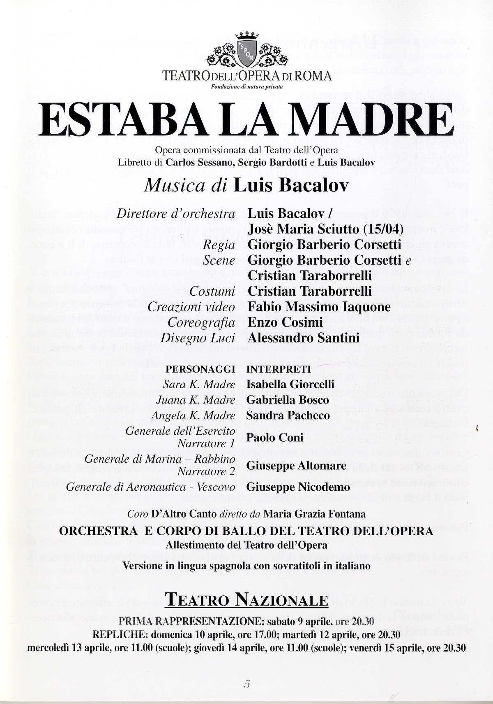
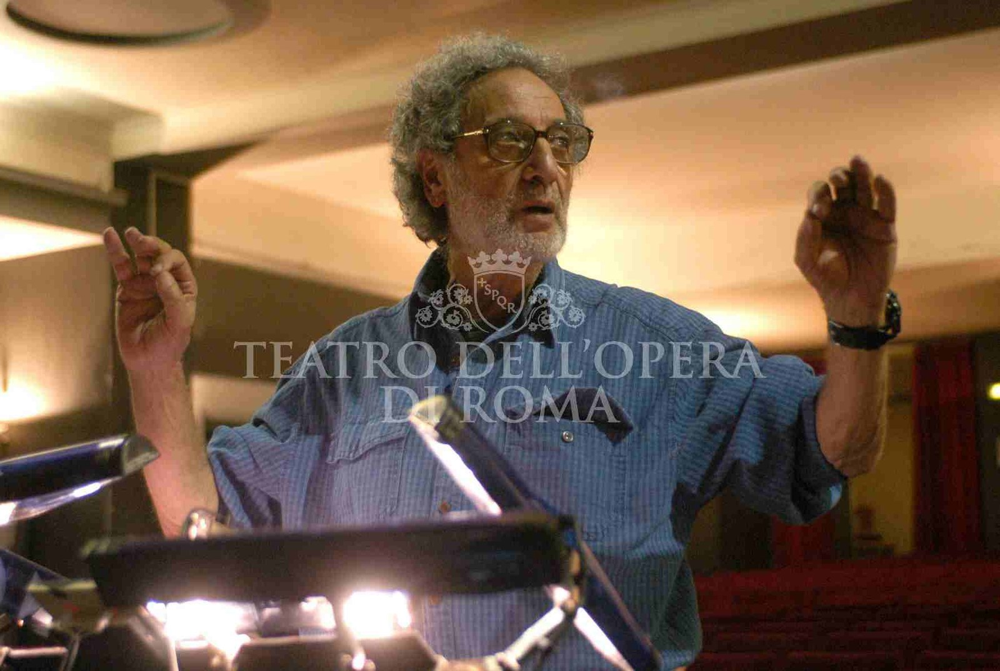
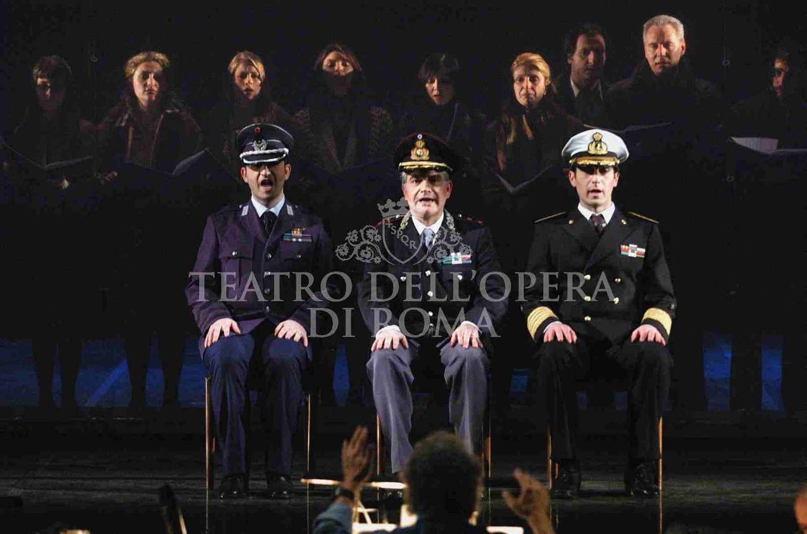
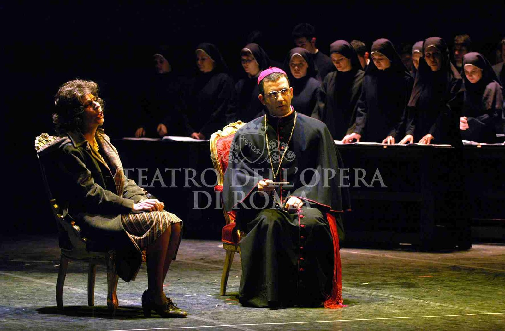
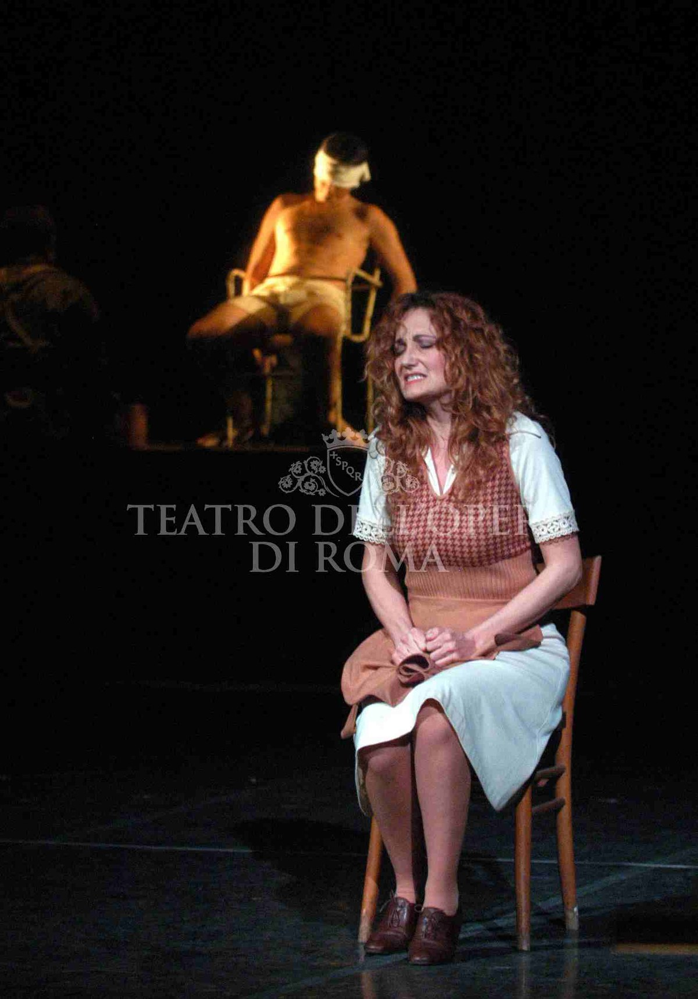
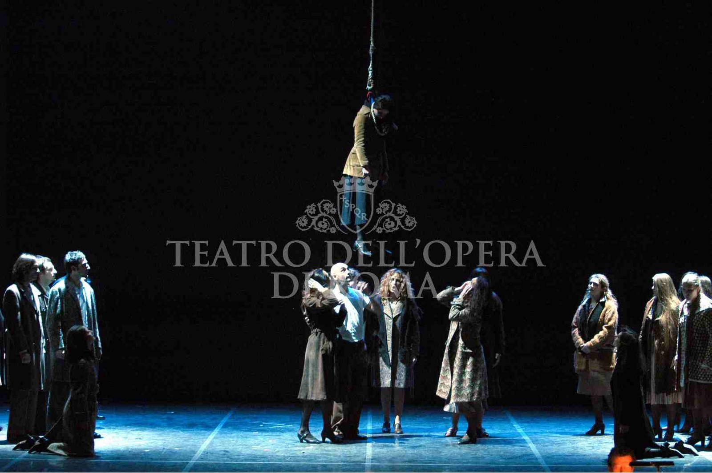
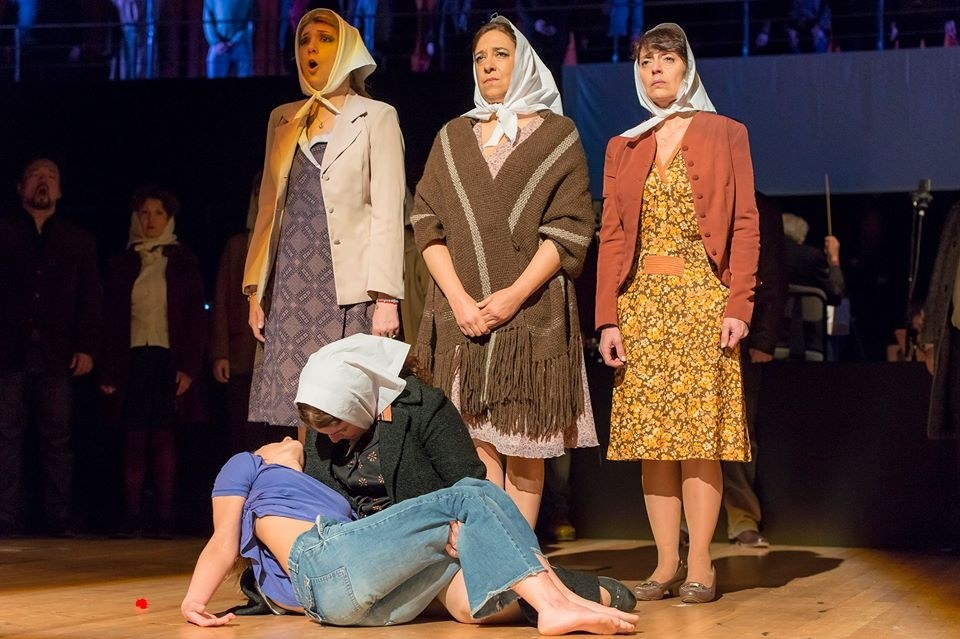
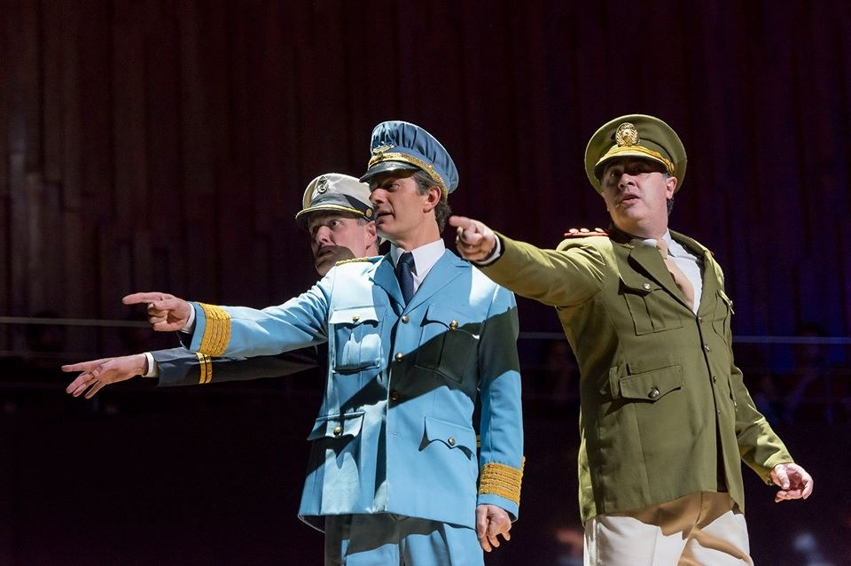
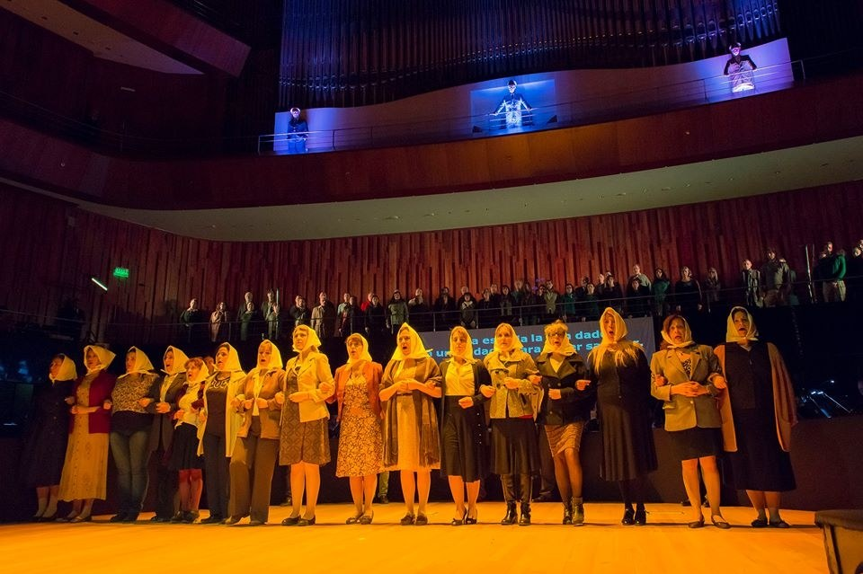

Tre madri argentine. Tre figli scomparsi. Una giunta militare di tre generali. Una preghiera che non ha più nome.
Three Argentinian mothers. Three vanished sons. A military junta of three generals. A prayer that has lost its name.
Trois mères argentines. Trois fils disparus. Une junte militaire de trois généraux. Une prière qui n'a plus de nom.
Estaba la madre è uno “Stabat Mater” laico per soli, coro e orchestra, opera commissionata nel 2004 dal Teatro dell’Opera di Roma a Luis Bacalov (Buenos Aires 1933 – Roma 2017), premio Oscar 1995 per Il Postino. Attraverso quattro storie, l’opera ripercorre il dolore e il coraggio delle Madri di Plaza de Mayo alla ricerca dei loro figli scomparsi: il dramma dei desaparecidos, vittime del regime militare argentino salito al potere nel marzo 1976. Libretto di Carlos Sessano, Sergio Bardotti e dello stesso Bacalov. Eseguita in lingua spagnola con sovratitoli italiani.
Prima rappresentazione assoluta al Teatro Nazionale di Roma sabato 9 aprile 2004; sei recite fino al 15 aprile (di cui due matinée scolastiche). Direzione affidata allo stesso Bacalov, con José Maria Sciutto sul podio per la recita del 15 aprile. Regia di Giorgio Barberio Corsetti, scene firmate da Corsetti e Cristian Taraborrelli, costumi di Cristian Taraborrelli. Video di Fabio Massimo Iaquone, coreografia di Enzo Cosimi, disegno luci di Alessandro Santini. Coro D’Altro Canto diretto da Maria Grazia Fontana, Orchestra e Corpo di Ballo del Teatro dell’Opera.
La drammaturgia è costruita su tre figure femminili — Sara K. la modista, Juana K. la maestra, Angela K. l’operaia — madri di tre figli sequestrati. Contro di loro, tre generali (Esercito, Marina, Aeronautica) e i corpi complici di Chiesa e Sinagoga. Il K. dei cognomi — come in Kafka — è l’iniziale dei desaparecidos: nomi cancellati per sempre. Le scene rispondono al peso politico dell’opera con un dispositivo asciutto: spazio vuoto come piazza di marmo, segni minimi per evocare il potere militare e la richiesta delle madri; nero per i generali, bianco per le madri come il famoso pañuelo blanco di Plaza de Mayo.
“Estaba la madre è un monito a non dimenticare, da qui nasce la forza dello spettacolo evocativo dell’orrore che nasce dalla normalità.”
L’opera è stata ripresa al Centro Cultural Kirchner di Buenos Aires in una seconda versione, ritornando così nella terra delle Madri di Plaza de Mayo. Per Cristian, ventiquattrenne, Estaba la madre è uno dei primi grandi titoli di opera contemporanea, in continuità col debutto di Maria di Rohan alla Fenice 1999.
Estaba la madre is a secular “Stabat Mater” for soloists, chorus and orchestra, commissioned in 2004 by the Teatro dell’Opera di Roma from Luis Bacalov (Buenos Aires 1933 – Rome 2017), 1995 Oscar winner for Il Postino. Through four stories, the work retraces the pain and courage of the Mothers of Plaza de Mayo searching for their vanished children: the drama of the desaparecidos, victims of the Argentinian military regime that came to power in March 1976. Libretto by Carlos Sessano, Sergio Bardotti and Bacalov himself. Performed in Spanish with Italian surtitles.
World premiere at the Teatro Nazionale in Rome on Saturday 9 April 2004; six performances through 15 April (including two school matinees). Conducted by Bacalov, with José Maria Sciutto on the podium on 15 April. Direction by Giorgio Barberio Corsetti, sets by Corsetti and Cristian Taraborrelli, costumes by Cristian Taraborrelli. Video by Fabio Massimo Iaquone, choreography by Enzo Cosimi, lighting by Alessandro Santini. Coro D’Altro Canto directed by Maria Grazia Fontana, Orchestra and Corps de Ballet of the Teatro dell’Opera.
The dramaturgy is built on three female figures — Sara K. the milliner, Juana K. the teacher, Angela K. the worker — mothers of three abducted children. Against them, three generals (Army, Navy, Air Force) and the complicit bodies of Church and Synagogue. The K. in the surnames — as in Kafka — is the initial of the disappeared: names erased forever.
“Estaba la madre is a warning never to forget: from this comes the strength of a show evoking the horror that arises from normality.”
The work was later restaged at the Centro Cultural Kirchner in Buenos Aires, returning to the land of the Mothers of Plaza de Mayo. For Cristian, twenty-four, this is one of his first major contemporary opera titles.
Estaba la madre est un « Stabat Mater » laïc pour solistes, chœur et orchestre, opéra commandé en 2004 par le Teatro dell’Opera di Roma à Luis Bacalov (Buenos Aires 1933 – Rome 2017), Oscar 1995 pour Il Postino. À travers quatre histoires, l’œuvre retrace la douleur et le courage des Mères de la place de Mai à la recherche de leurs enfants disparus. Livret de Carlos Sessano, Sergio Bardotti et Bacalov lui-même. En langue espagnole avec surtitres italiens.
Création mondiale au Teatro Nazionale de Rome le 9 avril 2004; six représentations jusqu’au 15 avril. Direction: Bacalov, avec José Maria Sciutto le 15 avril. Mise en scène Giorgio Barberio Corsetti, scénographie Corsetti et Cristian Taraborrelli, costumes Cristian Taraborrelli. Vidéo Fabio Massimo Iaquone, chorégraphie Enzo Cosimi, lumières Alessandro Santini. Chœur D’Altro Canto dirigé par Maria Grazia Fontana.
« Estaba la madre est une mise en garde à ne pas oublier, d’ici naît la force du spectacle évoquant l’horreur qui surgit de la normalité. »
L’œuvre a été reprise au Centro Cultural Kirchner de Buenos Aires, revenant ainsi sur la terre des Mères de la place de Mai.
Locandina ufficiale — Teatro dell’Opera 2004

Pagina del programma di sala con i credits ufficiali della prima assoluta. Dalla locandina si conferma la doppia regia scenografica (Corsetti e Taraborrelli), la doppia direzione (Bacalov + Sciutto), il Coro D’Altro Canto diretto da Maria Grazia Fontana, e le sei recite di cui due matinée dedicate alle scuole.
Page from the official program with the world-premiere credits. The poster confirms joint set design (Corsetti and Taraborrelli), two conductors (Bacalov + Sciutto), the Coro D’Altro Canto directed by Maria Grazia Fontana, and the six performances including two school matinees.
Page du programme officiel avec les credits de la création mondiale.
Foto di Scena — Archivio Storico Opera Roma
Materiali fotografici dall’Archivio Storico del Teatro dell’Opera di Roma. Edizione Teatro Nazionale, aprile 2004.






Riproposta — Centro Cultural Kirchner, Buenos Aires
L’opera è tornata sul palcoscenico in una seconda versione al Centro Cultural Kirchner di Buenos Aires — nella città delle Madri di Plaza de Mayo — in una sala da concerto con il coro in piedi e le madri schierate al proscenio. Foto dall’archivio ufficiale Luis Bacalov.



Riferimenti d'archivio
Tags